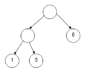

You just moved into a strange neighbourhood. You notice that the roads in your neighbourhood form a binary tree, with the houses forming the leaves of the tree. But this doesn't really matter to you, because it's all about the candy during Halloween! However, having just moved in, you might end up getting lost. So you create a plan: Start at the root of your neighbourhood and walk to every house and ask for candy! Before setting off on your adventure however, you want to calculate the minimum number of roads you’ll need to walk and the total amount of candy you'll get.
The input file DATA4.txt will contain 5 test cases. Each test case is a line containing a single string (less than 256 characters long) describing the tree that your neighbourhood forms. A binary tree can be recursively described as either:
- A leaf c (1 <= c <= 20) representing the amount of candy received from the house.
- A node (t t) - where t represents a tree.
For example, the tree represented by ((1 5) 8) would look like:

The output file OUT4.txt will contain 5 lines of output, each being a pair of integers R and C. R is the minimum number of roads needed to be traversed to get all the candy (starting from the root (top) of the tree, and not needing to return). C represents the total amount of candy you'll collect.
((1 5) 8) (1 3)
6 14 3 4